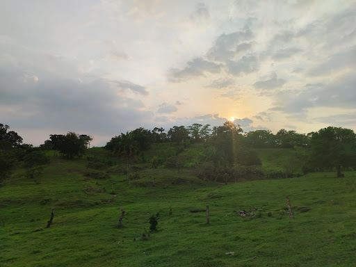

Nuestra Historia
Un recorrido por los orígenes de nuestro ejido, las familias fundadoras y la memoria de nuestro pueblo.
Explorar historia →Historia, comunidad y tradiciones
Trancas Viejas es nuestra comunidad en Moloacán, Veracruz. Somos un pueblo tranquilo de gente trabajadora dedicada al campo, la milpa y la ganadería.
Aquí nos conocemos entre vecinos, nos apoyamos en las faenas y cuidamos nuestras costumbres.

Conoce la historia, rincones y tradiciones de nuestro pueblo
Un recorrido por los orígenes de nuestro ejido, las familias fundadoras y la memoria de nuestro pueblo.
Explorar historia →
Los rincones que hacen único a Trancas Viejas: el vivero, los caminos, las parcelas y nuestros espacios comunitarios.
Ver lugares →
Nuestras celebraciones, los altares de Todos Santos, los convivios y los momentos que nos unen como comunidad.
Conocer eventos →
Una colección visual de la vida diaria, nuestra gente, los paisajes y los atardeceres en el campo.
Abrir galería →"Trancas Viejas se construye todos los días con el esfuerzo de su gente, el trabajo en el campo y la unión de la comunidad."— Orgullo Veracruzano
Trancas Viejas se localiza en el municipio de Moloacán, en el sur del estado de Veracruz
Pueblo campesino y ganadero ubicado en la zona sur veracruzana, conectado por carretera local con Moloacán y Villa Cuichapa.